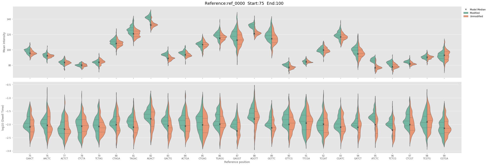
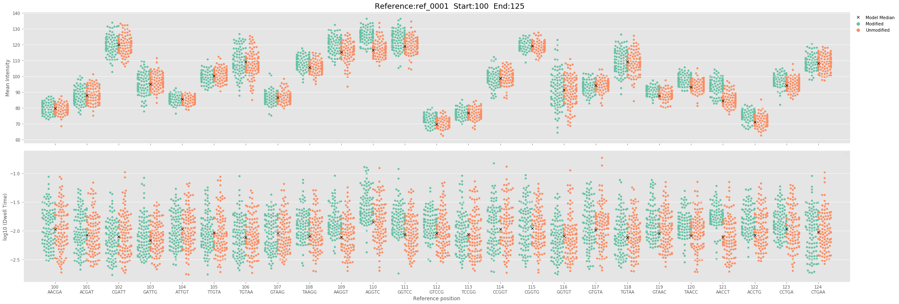
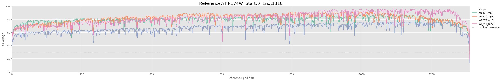
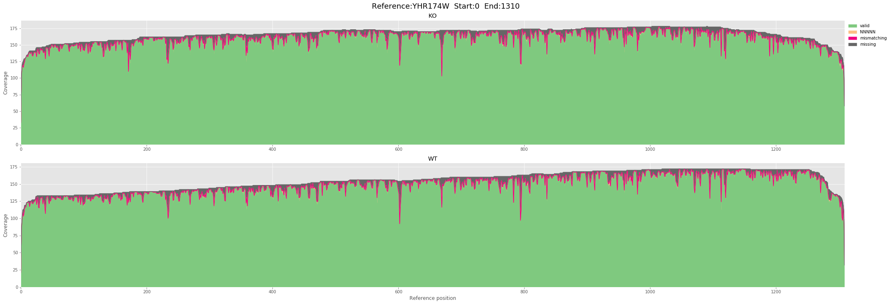
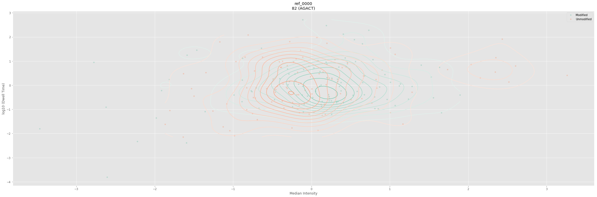

Generate plots and tables with SampCompDB
Whether ran from the CLI or API SampComp creates a python object database (shelve DBM) containing the statistical analysis results.
The API directly returns a SampCompDB object wrapping the shelve. It is also possible to reload the SampCompDB latter using the db file path prefix. SampCompDB also need a FASTA file to get the corresponding reference id sequence and accept an optional BED file containing genomic annotations. SampCompDB provide a large selection of simple high level function to plot and export the results.
At the moment SampCompDB is only accessible through the python API.
Import the package
from nanocompore.SampCompDB import SampCompDB, jhelp
Load the database with SampCompDB
jhelp (SampCompDB)
nanocompore.SampCompDB.init
Import a shelve db and a fasta reference file. Automatically returned by SampComp Can also be manually created from an existing shelve db output
- db_prefix : file_prefix_path (required)
Prefix of the database. For example if the path to the db file is "/outpath/out.db" the db_prefix is "/outpath/out"
- fasta_fn : file_path (required)
Path to a fasta file corresponding to the reference used for read alignemnt
- bed_fn : file_path (default = None)
Path to a BED file containing the annotation of the transcriptome used as reference when mapping
- run_type : str {RNA,DNA} (default = RNA)
Define the run type model to import (RNA or DNA)
- log_level : str {warning,info,debug} (default = info)
Set the log level.
Basic initialisation
# Load database db = SampCompDB ( db_prefix = "results/simulated_", fasta_fn = "references/simulated/ref.fa") # Print general metadata information print (db) # Prit list of references containing valid data print (db.ref_id_list)
Loading SampCompDB
Calculate results
[SampCompDB]
package_name: nanocompore
package_version: 1.0.0b7
timestamp: 2019-04-04 11:05:23.270305
comparison_methods: ['GMM', 'KS']
pvalue_tests: ['GMM_anova_pvalue', 'KS_dwell_pvalue', 'KS_intensity_pvalue']
sequence_context: 0
min_coverage: 30
n_samples: 4
Number of references: 5
['ref_0000', 'ref_0002', 'ref_0001', 'ref_0003', 'ref_0004']
Generate text reports
SampCompDB can generate 3 types of text reports:
* Tabulated statistics => save_report
* Tabulated intensity and dwell values per conditions => save_shift_stats
* BED significant genomic positions => save_to_bed
In addition, we also conveniently wrapped all 3 methods in save_all.
save_report
jhelp(SampCompDB.save_report)
nanocompore.SampCompDB.save_report
Saves a tabulated text dump of the database containing all the statistical results for all the positions
- output_fn : str (default = None)
Path to file where to write the data. If None, data is returned to the standard output.
# Reload DB db = SampCompDB (db_prefix = "results/simulated_", fasta_fn = "references/simulated/ref.fa", log_level="warning") # Save report db.save_report (output_fn="./results/simulated_report.tsv") # Visualise first lines !head "./results/simulated_report.tsv"
pos chr genomicPos ref_id strand ref_kmer GMM_anova_pvalue KS_dwell_pvalue KS_intensity_pvalue GMM_cov_type GMM_n_clust cluster_counts Anova_delta_logit 0 NA NA ref_0000 NA AATGG 0.005245519399155092 1.6993740039732178e-11 1.4627259309612494e-17 full 2 Modified_rep1:6/49__Modified_rep2:4/41__Unmodified_rep1:41/14__Unmodified_rep2:32/13 -2.9907071055 1 NA NA ref_0000 NA ATGGG nan 8.820572851659097e-06 0.00013789333950857486 full 1 NC nan 2 NA NA ref_0000 NA TGGGC nan 0.014838000312885985 7.275766237834673e-05 full 1 NC nan 3 NA NA ref_0000 NA GGGCT nan 0.7170686058500053 0.9283139049939192 full 1 NC nan 4 NA NA ref_0000 NA GGCTT nan 0.8151939481590966 0.9695221198459655 full 1 NC nan 5 NA NA ref_0000 NA GCTTA nan 0.9988610897488148 0.6475435384552904 full 1 NC nan 6 NA NA ref_0000 NA CTTAA nan 0.9861884723418123 0.9968163382856648 full 1 NC nan 7 NA NA ref_0000 NA TTAAA nan 0.9611279889382083 0.7193199986470227 full 1 NC nan 8 NA NA ref_0000 NA TAAAC nan 0.8151939481590966 0.7193199986470227 full 1 NC nan
save_shift_stats
jhelp(SampCompDB.save_shift_stats)
nanocompore.SampCompDB.save_shift_stats
Save the mean, median and sd intensity and dwell time for each condition and for each position. This can be used to evaluate the intensity of the shift for significant positions.
- output_fn (default = None)
Path to file where to write the data. If None, data is returned to the standard output.
# Reload DB db = SampCompDB (db_prefix = "results/simulated_", fasta_fn = "references/simulated/ref.fa", log_level="warning") # Save report db.save_shift_stats (output_fn="./results/simulated_shift.tsv") # Visualise first lines !head "./results/simulated_shift.tsv"
red_if pos c1_mean_intensity c2_mean_intensity c1_median_intensity c2_median_intensity c1_sd_intensity c2_sd_intensity c1_mean_dwell c2_mean_dwell c1_median_dwell c2_median_dwell c1_sd_dwell c2_sd_dwell ref_0001 0 99.86521522816629 95.52846468110967 100.16702432141244 95.13036610945501 3.7516782494836702 3.1739776537905118 0.017977369379788073 0.014142268215356003 0.014592671365001404 0.009938811132441343 0.011880802887400801 0.01184474740385291 ref_0001 1 95.51936094713678 87.27615952874599 95.9945031188992 86.41810985869571 4.439033457155757 4.104499368547678 0.022549460598306155 0.013115311034969667 0.01937803071046053 0.009880540414948643 0.014722117319511605 0.00973550865537285 ref_0001 2 95.52315169782791 92.34964506890061 95.26854917868084 92.33788488943738 5.950261769233862 5.868269402327571 0.015595689944837725 0.013457094587408206 0.012115546273371455 0.008773347718738837 0.00933692542234524 0.01274618467516576 ref_0001 3 122.29563233691074 120.31834278328982 122.33536172524686 119.98165407420854 3.624654560435613 3.3985294638505827 0.018135679591528706 0.014685872696189272 0.013070412702765481 0.008948805511716458 0.013245219967907508 0.01525109709578569 ref_0001 4 127.86098017400758 127.44825183561187 128.0262486329749 127.42965372246013 4.280533244462166 4.710869351362601 0.012663102316134848 0.011692853971881564 0.009313320260530871 0.008134744380027242 0.009611429620053248 0.009653227513903647 ref_0001 5 67.63481699926052 67.1827907286042 67.3472284205863 67.35375035804773 2.5099929659051337 2.796329273828752 0.010501496157478092 0.010267078518930542 0.007116625933422124 0.007533754721474799 0.00937181209207926 0.00810885837245761 ref_0001 6 66.2738277340307 66.52302339484865 66.31190127082398 66.79704763596214 1.7105309704572291 1.7753701853358863 0.014841702561212684 0.01386411611776216 0.009644741613041173 0.00982445969943052 0.0170488676992597 0.011893320651022577 ref_0001 7 69.14079055190206 69.58706995729456 69.04380455926685 69.0855322221245 2.4297811434241923 2.9605601125756387 0.009595625294236621 0.0114205931427363 0.007536527142576946 0.007678758916950794 0.007986095512596545 0.010793919224660824 ref_0001 8 82.33429240816304 82.16964832837907 82.32011862505345 82.10017750465934 3.0161103805165466 2.42309027320146 0.013362509869491567 0.011667214127728188 0.009165033372008037 0.008438555634548251 0.017309804487855632 0.009154397018922332
save_to_bed
jhelp(SampCompDB.save_to_bed)
nanocompore.SampCompDB.save_to_bed
Save the position of significant positions in the genome space in BED6 or BEDGRAPH format. The resulting file can be used in a genome browser to visualise significant genomic locations. The option is only available if SampCompDB if initialised with a BED file containing genome annotations.
- output_fn (default = None)
Path to file where to write the data
- bedgraph (default = False)
save file in bedgraph format instead of bed
- pvalue_field (default = None)
specifies what column to use as BED score (field 5, as -log10)
- pvalue_thr (default = 0.01)
only report positions with pvalue<=thr
- span (default = 5)
The size of each BED feature. If size=5 (default) features correspond to kmers. If size=1 features correspond to the first base of each kmer.
- convert (default = None)
one of 'ensembl_to_ucsc' or 'ucsc_to_ensembl". Convert chromosome named between Ensembl and Ucsc conventions
- assembly (default = None)
required if convert is used. One of "hg38" or "mm10"
# Reload DB db = SampCompDB (db_prefix = "results/simulated_", fasta_fn = "references/simulated/ref.fa", bed_fn="references/simulated/annot.bed", log_level="warning") # Save report db.save_to_bed (output_fn="./results/simulated_sig_positions.bed") # Visualise first lines !head "./results/simulated_sig_positions.bed"
Generate plots
SampCompDB comes with a range of methods to visualise the data and explore candidate.
plot_pvalue: Plot the-log(10)of the pvalues obtained for all the statistical methods at reference levelplot_signal: Generate comparative plots of both median intensity and dwell time for each condition at read levelplot_coverage: Plot the read coverage over a reference for all samples analysedplot_kmers_stats: Fancy version ofplot_coveragethat also report missing, mismatching and undefined kmers status from Nanopolishplot_position: Allow to visualise the distribution of intensity and dwell time in 2D for a single position
Extra import for the plotting library
Matplotlib is required to use the ploting methods in Jupyter
import matplotlib.pyplot as pl %matplotlib inline
plot_pvalue
jhelp(SampCompDB.plot_pvalue)
nanocompore.SampCompDB.plot_pvalue
Plot pvalues per position (by default plot all fields starting by "pvalue")
- ref_id : str (required)
Valid reference id name in the database
- start : int (default = None)
Start coordinate
- end : int (default = None)
End coordinate (included)
- kind : {lineplot,barplot} (default = lineplot)
kind of plot to represent the data
- figsize : tuple of 2 int (default = (30, 10))
length and heigh of the output plot
- palette : str (default = Set2)
Colormap. See https://matplotlib.org/users/colormaps.html, https://matplotlib.org/examples/color/named_colors.html
- plot_style : str (default = ggplot)
Matplotlib plotting style. See https://matplotlib.org/users/style_sheets.html
- tests : str, list or None (default = None)
Limit the pvalue methods shown in the plot. Either a list of methods or a string coresponding to a part of the name
# Reload DB db = SampCompDB (db_prefix = "results/simulated_", fasta_fn = "references/simulated/ref.fa", log_level="warning") # Plot fig, ax = db.plot_pvalue ("ref_0000")

# Reload DB db = SampCompDB (db_prefix = "results/simulated_stats_", fasta_fn = "references/simulated/ref.fa", log_level="warning") # Plot fig, ax = db.plot_pvalue ("ref_0001", palette="Set1")

# Reload DB db = SampCompDB (db_prefix = "results/yeast_", fasta_fn = "references/yeast/Yeast_transcriptome.fa", log_level="warning") # Plot fig, ax = db.plot_pvalue ("YHR174W")

plot_signal
jhelp(SampCompDB.plot_signal)
nanocompore.SampCompDB.plot_signal
Plot the dwell time and median intensity distribution position per position Pointless for more than 50 positions at once as it becomes hard to distinguish
- ref_id : str (required)
Valid reference id name in the database
- start : int (default = None)
Start coordinate
- end : int (default = None)
End coordinate (included)
- kind : {violinplot, boxenplot, swarmplot} (default = violinplot)
Kind of plot
- split_samples : bool (default = False)
If samples for a same condition are represented separatly. If false they are merged per condition
- figsize : tuple of 2 int (default = (30, 10))
length and heigh of the output plot
- palette : str (default = Set2)
Colormap. See https://matplotlib.org/users/colormaps.html, https://matplotlib.org/examples/color/named_colors.html
- plot_style : str (default = ggplot)
Matplotlib plotting style. See https://matplotlib.org/users/style_sheets.html
# Reload DB db = SampCompDB (db_prefix = "results/simulated_", fasta_fn = "references/simulated/ref.fa", log_level="warning") # Plot fig, ax = db.plot_signal ("ref_0000", start=75, end=100)

# Reload DB db = SampCompDB (db_prefix = "results/simulated_", fasta_fn = "references/simulated/ref.fa", log_level="warning") # Plot fig, ax = db.plot_signal ("ref_0001", start=100, end=125, kind="swarmplot")

# Reload DB db = SampCompDB (db_prefix = "results/yeast_", fasta_fn = "references/yeast/Yeast_transcriptome.fa", log_level="warning") # Plot fig, ax = db.plot_signal ("YHR174W", start=665, end=700, kind="boxenplot")

plot_coverage
jhelp(SampCompDB.plot_coverage)
nanocompore.SampCompDB.plot_coverage
Plot the read coverage over a reference for all samples analysed
- ref_id : str (required)
Valid reference id name in the database
- start : int (default = None)
Start coordinate
- end : int (default = None)
End coordinate (included)
- figsize : tuple of 2 int (default = (30, 5))
length and heigh of the output plot
- palette : str (default = Set2)
Colormap. See https://matplotlib.org/users/colormaps.html, https://matplotlib.org/examples/color/named_colors.html
- plot_style : str (default = ggplot)
Matplotlib plotting style. See https://matplotlib.org/users/style_sheets.html
# Reload DB db = SampCompDB (db_prefix = "results/yeast_", fasta_fn = "references/yeast/Yeast_transcriptome.fa", log_level="warning") # Plot fig, ax = db.plot_coverage ("YHR174W")

plot_kmers_stats
jhelp(SampCompDB.plot_kmers_stats)
nanocompore.SampCompDB.plot_kmers_stats
Fancy version of plot_coverage that also report missing, mismatching and undefined kmers status from Nanopolish
- ref_id : str (required)
Valid reference id name in the database
- start : int (default = None)
Start coordinate
- end : int (default = None)
End coordinate (included)
- figsize : tuple of 2 int (default = (30, 10))
length and heigh of the output plot
- palette : str (default = Accent)
Colormap. See https://matplotlib.org/users/colormaps.html, https://matplotlib.org/examples/color/named_colors.html
- plot_style : str (default = ggplot)
Matplotlib plotting style. See https://matplotlib.org/users/style_sheets.html
# Reload DB db = SampCompDB (db_prefix = "results/yeast_", fasta_fn = "references/yeast/Yeast_transcriptome.fa", log_level="warning") # Plot fig, ax = db.plot_kmers_stats ("YHR174W")

plot_position
jhelp(SampCompDB.plot_position)
nanocompore.SampCompDB.plot_position
Plot the dwell time and median intensity at the given position as a scatter plot.
- ref_id : str (required)
Valid reference id name in the database
- pos : int (default = None)
Position of interest
- split_samples (default = False)
If True, samples for a same condition are represented separately. If False, they are merged per condition
- figsize : tuple of 2 int (default = (30, 10))
length and heigh of the output plot
- palette : str (default = Set2)
Colormap. See https://matplotlib.org/users/colormaps.html, https://matplotlib.org/examples/color/named_colors.html
- plot_style : str (default = ggplot)
Matplotlib plotting style. See https://matplotlib.org/users/style_sheets.html
- xlim : tuple of 2 int (default = (None, None))
A tuple of explicit limits for the x axis
- ylim : tuple of 2 int (default = (None, None))
A tuple of explicit limits for the y axis
- kde : bool (default = True)
plot the KDE of the intensity/dwell bivarariate distributions in the two samples
- scatter : bool (default = True)
if True, plot the individual data points
- pointSize : int (default = 20)
int specifying the point size for the scatter plot
- model : bool (default = False)
If true, plot the GMM density estimate
- gmm_levels : int (default = 50)
number of contour lines to use for the GMM countour plot
# Reload DB db = SampCompDB (db_prefix = "results/simulated_", fasta_fn = "references/simulated/ref.fa", log_level="warning") # Plot fig, ax = db.plot_position ("ref_0000", pos=82)
